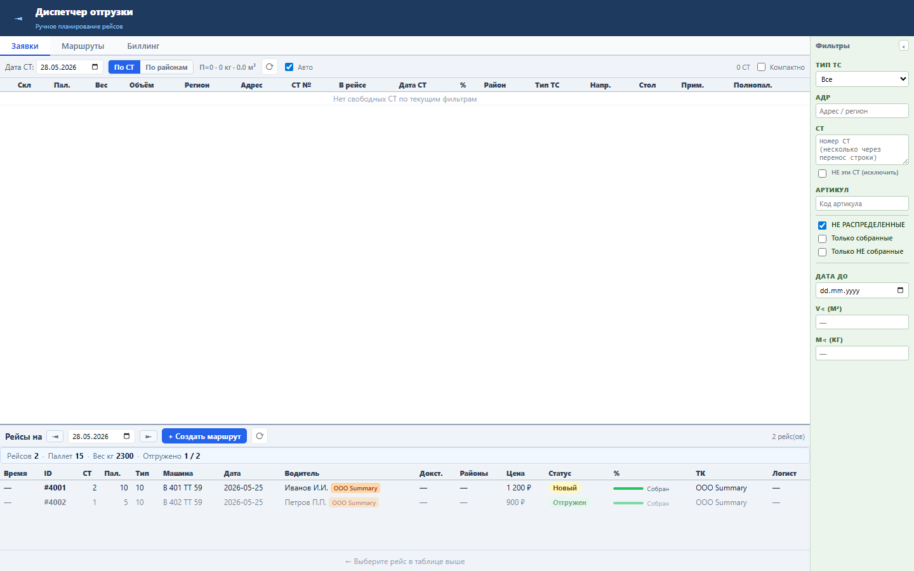
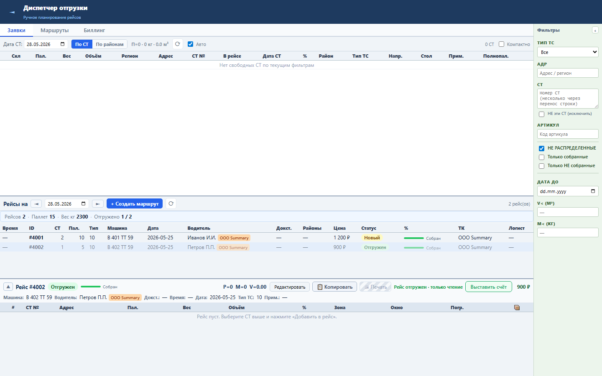

Блок даёт диспетчеру быстрый контроль объёма работы за выбранный день без отдельного отчёта.
Сводка считается на клиенте из уже загруженного списка рейсов: количество рейсов, сумма PALLET_COUNT, сумма TEMP_WEIGHT, количество рейсов со статусом «Отгружен».
Над таблицей рейсов появляется строка «Рейсов · Паллет · Вес кг · Отгружено», которая меняется вместе со списком выбранного дня.


Проверка: functional, UI smoke и load gate пройдены.